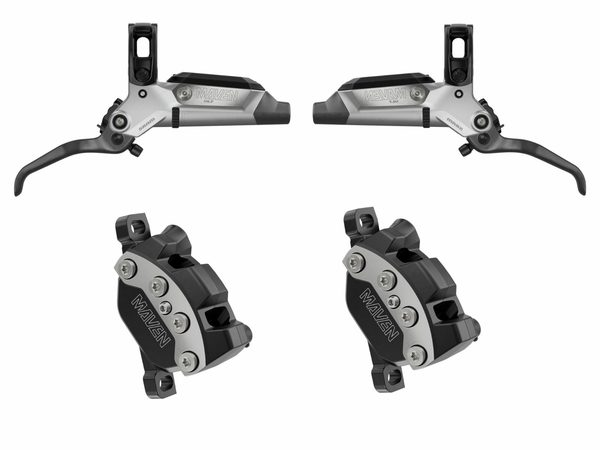
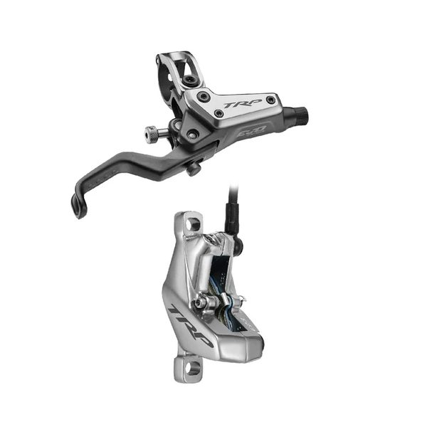
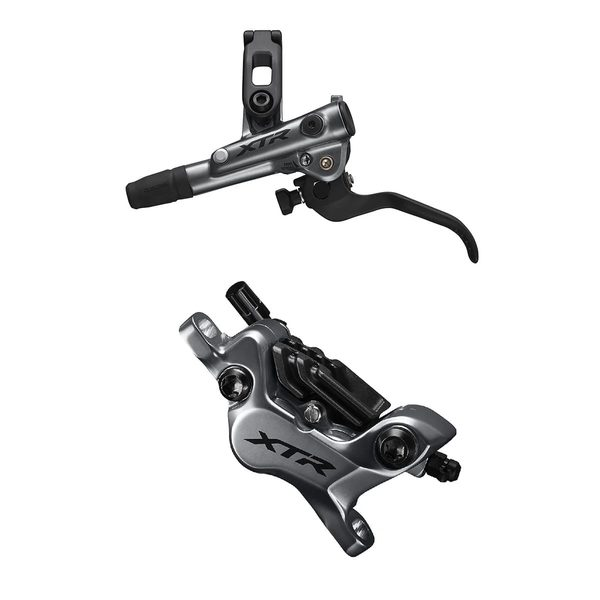
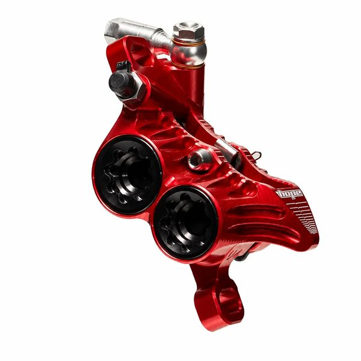
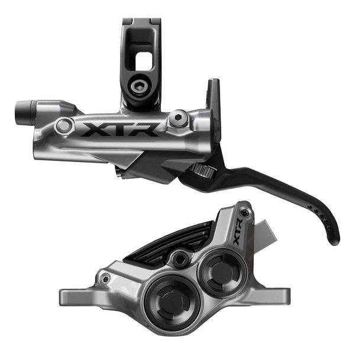
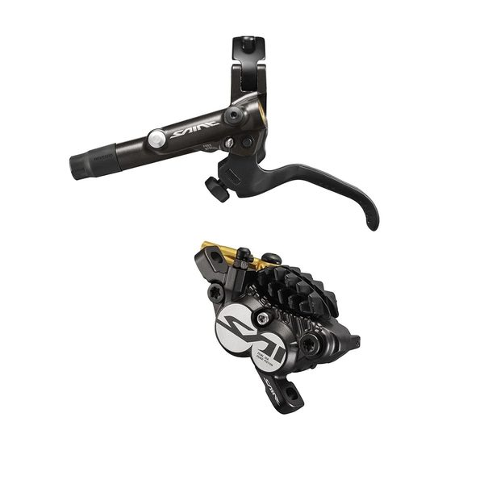
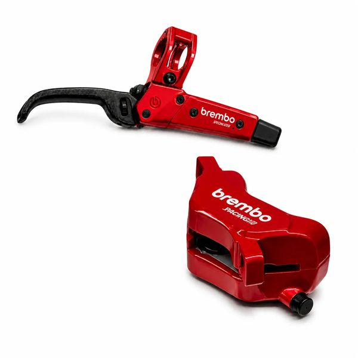

Brake Levers
SRAM Maven
2615 pts · 9 tracked riders
Compare 22 brake levers used by 58 tracked professional downhill riders. See rider count, competition points and associated profiles. The current points leader in this category is SRAM Maven.
2615 pts · 9 tracked riders

2533 pts · 4 tracked riders

1980 pts · 9 tracked riders

1034 pts · 4 tracked riders

937 pts · 4 tracked riders
448 pts · 5 tracked riders





This table records competitive usage within the RidersFanatics dataset. It does not claim that the first product is universally better, and race prototypes may differ from retail specifications.